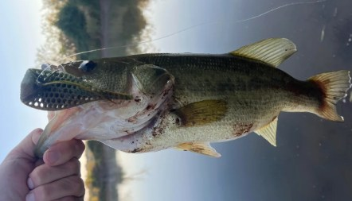
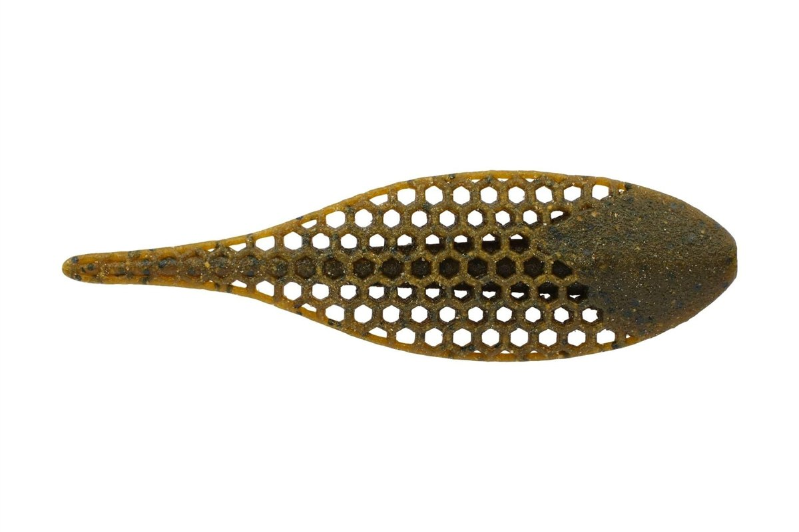
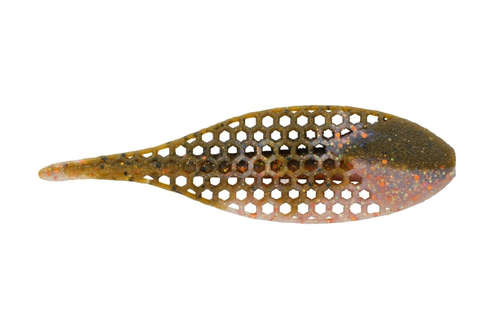
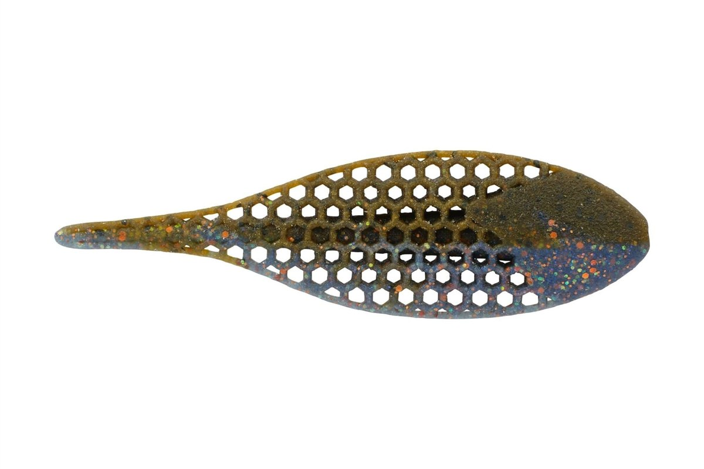
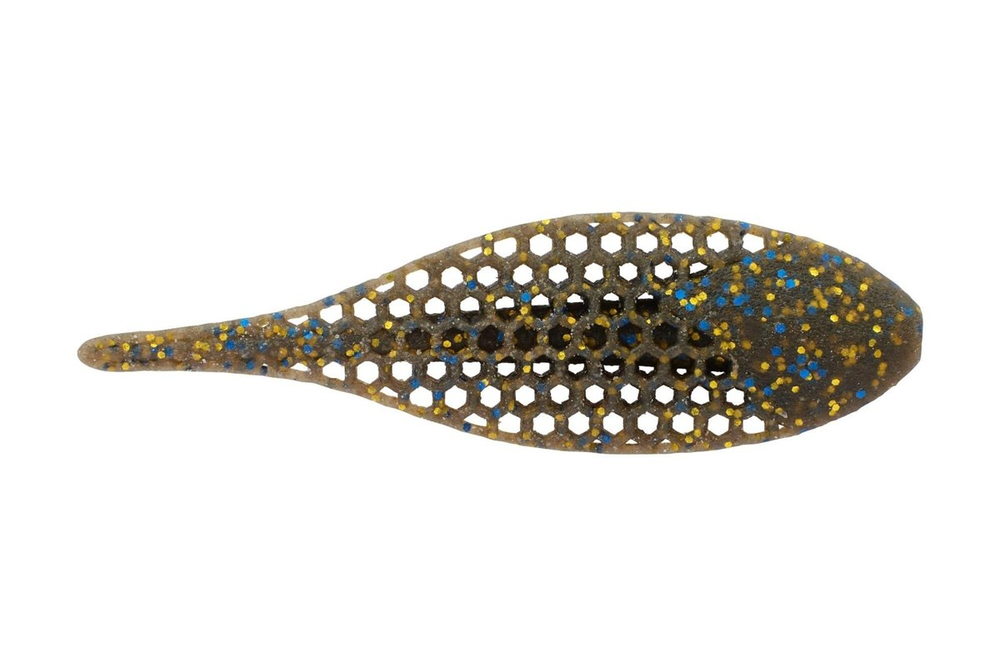

フラックスギル
（PowerBait MaxScent Flux Gill）
フラックスギルは、バークレイ（Berkley）の「パワーベイト マックスセント」シリーズのギル型ワームです。
バスのエサになるブルーギルを、ハチの巣のような穴あき構造で表現しました。穴を水が通り抜けて、匂いと味を広げ続けるのが最大の特徴。3.5インチと5.3インチの2サイズがあります。

画像出典:Berkley公式HP
スペック
- メーカー
- Berkley（バークレイ）
- タイプ
- ギル型ワーム（パワーベイト マックスセント）
- サイズ
- 3.5インチ／5.3インチ
- 入数
- 3.5インチ：6本／5.3インチ：4本
- 推奨フック
- 3.5インチ：オフセット#3/0〜4/0
5.3インチ：オフセット#4/0〜5/0 - 対応リグ
- ネコリグ・フリーリグ・ジグトレーラー・テキサスリグ
- カラー
- 全6色
- ターゲット
- ブラックバス
- 価格
- 1,300円（税抜）
- 発売
- 2026年4月
▼今すぐチェック


フラックスギルの特徴
穴あきボディで匂いを広げる、マックスセントのギル型ワーム
-
水が通り抜ける穴あきボディ
ボディに「Flux」と呼ばれるハチの巣状の穴が開いていて、水が中を通り抜ける。水に触れる面積が広いので、マックスセントの匂いと味を最大限に広げ、震えるような細かい動きも出る。
-
匂いで寄せて、味で離さないマックスセント
バークレイ独自のマックスセントを練り込んだボディを、さらに液に漬け込んで熟成させている。匂いでバスを寄せ、くわえた後も味で離しにくいので、より多く、より長いバイトが出る。
-
扁平ボディで強い水押しと水抜けを両立
ブルーギルのような平たいボディで水をしっかり押す一方、穴から水が抜けるのでリグが重くなりすぎない。ネコリグ・フリーリグ・ジグトレーラー・テキサスリグと、いろいろなリグで使える。
フラックスギルの使い方
定番はフリーリグやテキサスリグでボトムまで落とし、ズル引きやリフト＆フォールで見せる使い方です。
扁平ボディがフォールでヒラヒラと揺れ、穴から匂いを出しながらギルのように漂います。ネコリグで中層やボトムをシェイクしたり、ラバージグのトレーラーにしてボリュームを出すのもおすすめ。フックは3.5インチならオフセット#3/0〜4/0、5.3インチなら#4/0〜5/0が目安です。

フラックスギルで釣れたブラックバスです。
フラックスギルの得意な状況
ブルーギルが多い野池やリザーバー、ウィードやカバーの周りなど、ギルを食べているバスを狙う場面で出番です。
匂いと味で食わせるワームなので、反応が渋い日やプレッシャーの高い釣り場でも釣れるのが強み。スローに見せたいときは3.5インチ、ボリュームで大きなバスを狙いたいときは5.3インチと使い分けましょう。
ワンポイント
穴あきボディは水の抵抗を受けやすいので、リグを動かしたあとはしっかり止めて、匂いが広がる「間」を作るのがコツです。使った後はパッケージに戻して液に漬けておくと、匂いと味が長持ちします。
人気カラー
フラックスギルの人気カラーを紹介します。

グリーンパンプキンフィールドや天気を選ばず、一年中使える定番カラー。

ブルーギルオスのギルの婚姻色をイメージしたカラー。見やすく、梅雨の時期以外も使いやすい。

ダークギル光が少ない場所や濁りが強い時に、シルエットを出せるギル系カラー。

スモークブラックブルーゴールドカバーや深場、強い濁りでシルエットを目立たせたい時に。
画像出典:Berkley公式HP
▼今すぐチェック
フラックスギルに似ているルアー
-
 ウイニングクロー3.6インチ
DSTYLE
詳細はこちら＞
ウイニングクロー3.6インチ
DSTYLE
詳細はこちら＞
フリーリグやテキサスで底を探るクロー系ワーム。ザリガニを食べているバスにはこちら。
-
 クレイジーフラッパー2.8インチ
ケイテック
詳細はこちら＞
クレイジーフラッパー2.8インチ
ケイテック
詳細はこちら＞
ウデが水をつかんではためくクロー系。強い水押しで寄せたい時に。
-
 クラッシュシティ ザ インポスター
ラパラ
詳細はこちら＞
クラッシュシティ ザ インポスター
ラパラ
詳細はこちら＞
エラストマー素材のエビ型ワーム。ちぎれにくく、ボトムでじっくり見せられる。